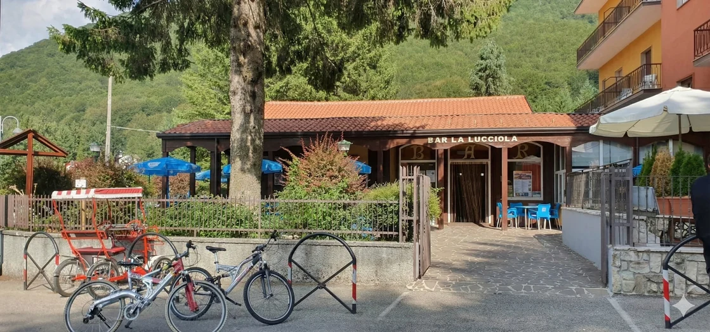

Un buon inizio.
Caffè, cappuccino e qualcosa di dolce. La prima pausa della giornata ha un sapore speciale.
Caffetteria ↗Il piacere delle cose semplici, il tempo di stare insieme. Ti aspettiamo sull’altopiano del Laceno.

La Lucciola è una delle attività storiche dell’altopiano del Laceno. In via dei Prati, ai piedi del Monte Cervarolo, accoglie chi vive la montagna e chi la scopre per la prima volta.
Una sala con camino per le giornate più fresche, il giardino tra abeti e pini nella bella stagione. Il posto in cui concedersi una pausa, prima di ripartire.
Vieni a trovarci ↗Caffè, cappuccino e qualcosa di dolce. La prima pausa della giornata ha un sapore speciale.
Caffetteria ↗Cioccolata calda, tè e tisane: scegli il tuo modo di ritrovare il calore dopo una giornata all’aperto.
Bevande calde ↗Un aperitivo, un brindisi e il piacere della compagnia. Perché a volte basta fermarsi un po’ di più.
Aperitivi e drink ↗La nostra montagna cambia volto.
La voglia di accoglierti rimane.
Via dei Prati, Laceno
83043 Bagnoli Irpino (AV)
Qui trovi gli orari del bar, aggiornati dalla stessa fonte del menù. Per informazioni o esigenze particolari, chiamaci.
Caricamento degli orari…
Se sei già passato a trovarci, racconta la tua esperienza.